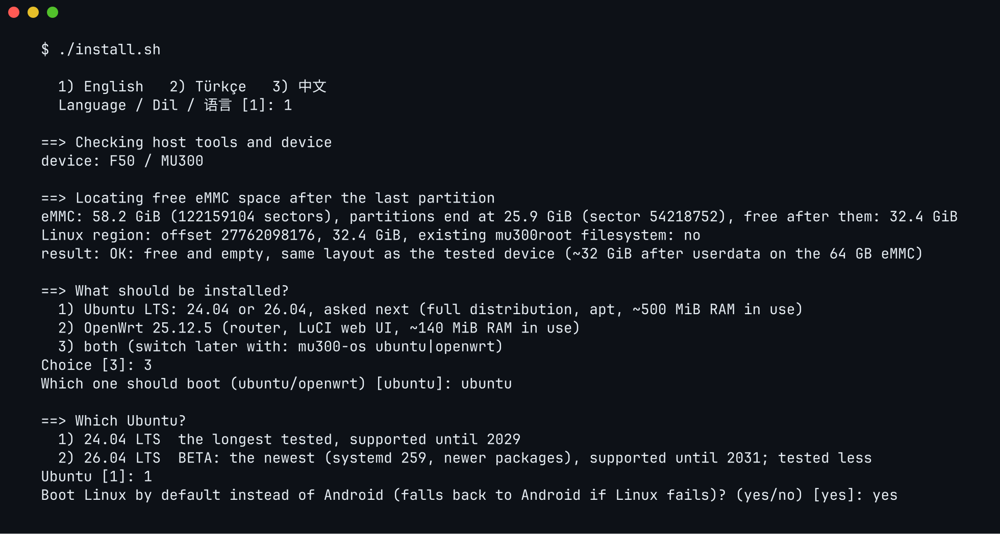
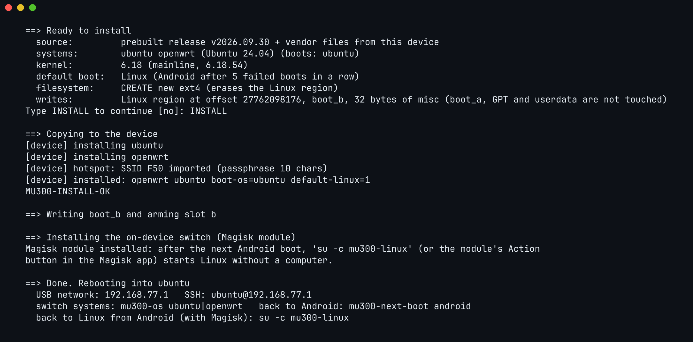

在你的 F50 或 U30 Air 上安装 Linux
四个步骤，大约 15 分钟。安装程序会问的每个问题，下面都有解释，并给出你不确定时该怎么回答。
备份
把设备上无法替代的专属数据复制到电脑。建议执行。
检查
--check读取设备，告诉你 Linux 能装在哪里。它不写入任何东西。安装
回答几个问题，看一遍摘要，输入
INSTALL。登录
大约一分钟后，通过 USB：SSH 或网页浏览器。
开始之前
一句话：设备必须已经 root，而且你的电脑能用 adb 和它通信。完整清单如下。
设备
- 一台 ZTE F50 / MU300 或 ZTE U30 Air（不是 U30 Pro）。
- 已 root 并解锁：它必须已经能启动修改过的 Android 启动镜像。做到这一步不属于本项目；你要按照那些工具自己的说明进行，风险自负。
- 打开了 USB 调试，并且设备用 USB 连接到你的电脑。
你的电脑
| 电脑 | 需要什么 | 怎样运行安装程序 |
|---|---|---|
| macOS | adb、Python 3、lz4 和 curl（通常已经有了） | 在“终端”中运行 ./install.sh |
| Linux | adb、Python 3、lz4 和 curl | 在终端中运行 ./install.sh |
| Windows 10/11 | adb 和 PowerShell。缺少 Python 3 及其 lz4 模块时，安装程序会自己安装。 | 在 PowerShell 中运行 .\install.ps1，或在 cmd 中运行 install.cmd（无需修改执行策略） |
adb 包含在 Android 的平台工具（platform-tools）里。在 Windows 上，即使不在 PATH 中，安装程序也能找到解压在项目旁边、
“下载”文件夹或桌面上的 platform-tools 文件夹。
获取项目
用 git 克隆，或者从 GitHub 下载（绿色的“Code”按钮，再点“Download ZIP”）并解压。无论哪种方式，安装程序启动时都会自动从 GitHub 更新自己。
git clone https://github.com/dikeckaan/mu300-linux
cd mu300-linux然后确认电脑能看到已 root 的设备：
adb devices # 你的设备应该显示为 "device"
adb shell su -c id # 应该输出 uid=0(root)第一次时，设备会询问是否允许这台电脑进行 USB 调试，Magisk 也可能请求给 shell 授予 root 权限：两个都允许。
安装会写入一个启动分区（boot_b；如果 Android 运行在槽位 b 上，比如更新之后常见的情况，则是 boot_a）以及 misc 的 32 个字节。在常见的 64 GB 设备上，Android、它的数据和分区表都不会被修改。即便如此，在错误的时刻断电、数据线不好或者一个失误，都可能让手机级设备需要用救砖工具恢复。请做好备份，不要装在你承受不起损失的设备上。
备份无法替代的数据
建议执行。它会把设备专属的数据（prodnv、基带校准和 IMEI 分区、引导程序链）复制到你的电脑，并逐一与设备上的内容核对。
tools/backup-device.sh # macOS / Linux，设备处于已 root 的 Android安装从不触碰这些分区，但如果它们哪天丢了，任何固件下载都找不回来，基带会一直坏着。请把这个文件夹放在安全的地方，并且不要放进任何代码仓库：里面有你的 IMEI。这个脚本在 macOS 和 Linux 上运行。
检查你的设备
这一步只读取，不写入任何东西。
MU300_LANG=zh ./install.sh --check # macOS / Linux
.\install.ps1 -Check -Lang zh # Windows (PowerShell)
install.cmd -Check -Lang zh # Windows (cmd)它会输出存储容量、Android 分区结束的位置以及其后有多少空闲空间。重要的是以 结果： 开头的最后一行：
| 如果显示 | 意思是 |
|---|---|
正常：空闲且为空，与测试设备布局相同（64 GB eMMC 上 userdata 之后约 32 GiB） | 常见的 64 GB 设备。继续第 2 步。 |
正常：空闲且为空，但只够安装一个系统 或 可装 OpenWrt，装不下 Ubuntu | 空闲区域较小。安装装得下的，或者用 SD 卡（F50）。 |
eMMC 上的空闲空间不足以安装 Linux；安装程序将改为提供 SD 卡选项 | 卡槽里有卡；安装程序会提供它，不会重新分区。 |
正常：已存在 MU300 Linux 安装 | Linux 已经装好了：安装程序会提供 update 或 wipe。 |
警告：未分区空间并非空白 | 有东西写入过这块空闲区域。安装会覆盖它；安装程序会要求你输入 overwrite。 |
完全没有空闲空间：32 GB 版本
如果检查找不到任何空间，你的设备就是 32 GB 版本，Android 的 userdata 占满了整个磁盘。你有两条路：
使用 SD 卡（F50）
在设备关机时插入一张至少 700 MiB 的卡。安装程序会提供它并格式化，内部存储上不会重新分区。
缩小 userdata（实验性）
安装程序可以通过缩小 userdata 腾出空间。这会重写分区表，并清除 Android 里的全部内容。它会先询问，并要求输入 ERASE。同意之前，请先用 tools/backup-device.sh 备份。
如果数字和这两种情况都不像，请停下来，带上 --check 的输出提交一个 issue：这些数字能判断设备版本。
关于 SD 卡（仅 F50）
- 一张至少 700 MiB 的卡。它会被格式化为 ext4，卷标为
mu300sd。已经装有其他 Linux（ext4）文件系统的卡永远不会被格式化。 - 请在设备关机时插卡。Linux 运行时插入的卡，要到下次重启后才能读取。
mu300sd卡总是优先启动。没有卡时，如果有内部安装，设备就启动它。两者都没有时，它会等几秒钟看有没有卡，然后在大约五分钟后回到 Android。- 三个内核都能读卡。U30 Air 没有卡槽。
- 设备会启动任何卷标为
mu300sd的卡，所以拿到设备的人也可以从卡上启动他自己的系统。
安装
MU300_LANG=zh ./install.sh # macOS / Linux
.\install.ps1 -Lang zh # Windows (PowerShell)
install.cmd -Lang zh # Windows (cmd)它会先询问语言，从 GitHub 更新你的项目副本（如果有新内容会自动重启自己），并再次检查设备。接下来是下面的问题。问完之后它会：
- 下载最新版本的现成镜像，并核对校验和，
- 从你自己的设备上复制 Wi-Fi 和基带文件（下载的内容里不含专有文件），
- 准确显示将要写入的内容，并等你输入
INSTALL， - 把系统复制到设备上，写入 Linux 启动镜像，并设置好 Linux 槽位，
- 给 Android 添加一个小的 Magisk 模块，以后不用电脑也能从 Android 启动 Linux，
- 重启设备进入 Linux。

安装程序的问题，逐一说明
灰色框里的文字是安装程序（选择中文时）显示的内容，有所缩短。方括号里的值，比如 [是]，是默认值：按 Enter 就会选它。是/否问题可以输入 是/否，也可以输入 yes/no
或 y/n。有些问题只在需要时才会出现。
安装程序的语言：1 English（默认），2 Türkçe，3 中文。如果用 MU300_LANG=zh 启动，就不会问这个问题。
输入 3 选择中文。
只有 F50 里插着 SD 卡时才会问。internal 使用内部存储的空闲空间，sd 把卡格式化给 Linux 用（卡上所有内容都会被清除，你需要输入 ERASE 确认）。
不确定？64 GB 设备选 internal，32 GB 版本选 sd。
Ubuntu 是带 apt 的完整 Linux 系统（约占用 500 MiB 内存）。OpenWrt 是带网页界面的路由器系统（约 140 MiB）。“两者都装”会把它们并排安装；之后用 mu300-os 切换。
不确定？如果检查结果说两个都装得下，选 3，两者都装（默认）。参见选择系统。
选择 OpenWrt 时才会问。控制面板增加了仪表盘、蜂窝锁定、短信、AT 终端和 USB 模式。
不确定？想在浏览器里看信号和短信就选 2；普通 OpenWrt 选 1（默认）。
装了两个系统时：先启动哪一个。另一个仍然保留。
按 Enter 选择 Ubuntu。
24.04 是默认选项，测试时间最长，支持到 2029 年。26.04 是最新版本（systemd 259，更新的软件包），支持到 2031 年，需要主线内核（6.18 或 7.2）。
不确定？选 1，24.04（默认）。
是：每次开机都进入 Linux，只有启动失败或你主动要求时才进入 Android。否：Android 仍是默认系统，需要时再启动 Linux。
按 Enter 选择“是”。
设备在自动回到 Android 之前，允许连续多少次没有完成的启动。如果一次启动在大约一分钟内没有完成，就算失败：断电、电池耗尽，或者 Linux 卡住。数字大，能容忍接触不良的数据线；数字小，Linux 真坏了时能更快回到 Android。这也是你手边没有电脑时回到 Android 的办法：在启动过程中连续断电这么多次。
按 Enter 选择 5。之后可以用 mu300-next-boot attempts N 修改。
你的手机已经认识 Android 的热点，这样它们无需重新设置就能连上 Linux 的热点。
按 Enter 选择“是”。
图形芯片，用于 OpenCL 计算。无论选哪个都没有屏幕。
按 Enter 选择“是”；想省空间就选“否”。
mu300-linux-vpn 提供的可选 VPN。之后也可以在设备上用 sudo mu300-extra install vpn 添加。
不确定？选“否”（首次安装时的默认值）。
内核是 Linux 中负责和硬件打交道的核心。5.4 是紫光展锐的厂商内核，测试时间最长。6.18 是主线 Linux 的长期支持版本，驱动更新，功能相同。7.2 最新，测试比 6.18 少。
不确定？选 1，5.4（默认）。Ubuntu 26.04 需要 6.18 或 7.2。之后可以用 sudo mu300-update kernel 6.18 修改。
只有已经装过 Linux 时才会问。update 重新安装系统，并保留你的设置、用户、主目录、SSH 主机密钥和 OpenWrt 的设置。wipe 清除 Linux 文件系统，从头安装。
按 Enter 选择 update（也可以输入 更新 或 清除）。
以后登录用的密码，至少 6 个字符，输入两次。输入时屏幕上不会显示任何东西。
选一个你记得住的：第 3 步要用。
最后一站。在它上面，安装程序会准确列出将要写入的内容：系统、内核、默认启动和要写入的分区。请看一遍。输入 INSTALL 以外的任何内容都会取消。
用大写字母输入 INSTALL。

登录
重启后等大约一分钟。设备会通过 USB 在你的电脑上显示为一块新的网卡。然后在终端里（Windows 的 PowerShell 自带 ssh）：
ssh ubuntu@192.168.77.1 # F50 上的 Ubuntu
ssh root@192.168.77.1 # F50 上的 OpenWrt
ssh ubuntu@192.168.78.1 # U30 Air 上的 Ubuntu使用你在安装时设置的密码。第一次连接时，ssh 会问你是否信任设备的密钥：输入 yes。
| F50 / MU300 | U30 Air | |
|---|---|---|
| USB 地址 | 192.168.77.1 | 192.168.78.1 |
| Ubuntu | ssh ubuntu@192.168.77.1 | ssh ubuntu@192.168.78.1 |
| OpenWrt | ssh root@192.168.77.1 或在浏览器打开 http://192.168.77.1 | ssh root@192.168.78.1 或 http://192.168.78.1 |
两个地址不同，是为了让一台 F50 和一台 U30 Air 可以同时插在同一台电脑上。
设备发出的 Wi-Fi 网络就是它的热点：除非你另外选择，它的名称和密码是从 Android 复制过来的。
macOS 在锁屏时不会设置一个从没见过的网络接口。第一次插上设备时（或者在更改了设备 USB 地址的更新之后），解锁 Mac，接口就会出现。
如果网络完全起不来，同一根线上还有一个串口控制台，没有网络也能用：
screen /dev/cu.usbmodem* 115200 # macOS安装之后
sudo mu300-toolkit # 一个包办一切的菜单
sudo mobile-data status # 5G/LTE 连接是否正常？
sudo mu300-update check # 有没有更新的版本？mu300-toolkit 是一个类似 raspi-config 的菜单：温度、CPU 和内存占用、网速、性能模式、Wi-Fi、VPN
和软件更新。直接命令列在功能页面上；更新、回滚以及在 Android 和 Linux 之间来回切换，请看更新与安全。
可以提前设定、跳过提问的选项
| 设置 | 作用 |
|---|---|
MU300_LANG=zh ./install.sh、.\install.ps1 -Lang zh | 跳过语言问题（en、tr、zh） |
MU300_STORAGE=sd 或 internal | 回答“内部存储还是 SD 卡”的问题 |
MU300_OPENWRT=plain 或 luci | 回答“要哪个 OpenWrt？” |
MU300_NO_SELF_UPDATE=1、-NoSelfUpdate | 不先从 GitHub 更新项目 |
MU300_FETCH_JOBS、MU300_RELEASE_URL | 并行下载的分块数（默认 8），或者你自己的发布文件镜像 |
不用电脑：Magisk zip
如果设备已经运行装有 Magisk 26 或更新版本的 root 过的 Android，就可以直接在设备上安装 Linux。每个发布版本为每个系统和内核各提供一个 zip；同一个 zip 在 F50 和 U30 Air 上都能用，并会自己找到安装位置（内部存储或 SD 卡）。
| Zip | 系统 | 内核 |
|---|---|---|
mu300-magisk-<tag>-openwrt-k5.4.zip | OpenWrt | 5.4 |
mu300-magisk-<tag>-openwrt-k6.18.zip | OpenWrt | 6.18 LTS |
mu300-magisk-<tag>-openwrt-k7.2.zip | OpenWrt | 7.2 |
mu300-magisk-<tag>-openwrt-luci-k5.4.zip | 带控制面板的 OpenWrt | 5.4 |
mu300-magisk-<tag>-openwrt-luci-k6.18.zip | 带控制面板的 OpenWrt | 6.18 LTS |
mu300-magisk-<tag>-openwrt-luci-k7.2.zip | 带控制面板的 OpenWrt | 7.2 |
mu300-magisk-<tag>-ubuntu-24.04-k5.4.zip | Ubuntu 24.04 | 5.4 |
mu300-magisk-<tag>-ubuntu-24.04-k6.18.zip | Ubuntu 24.04 | 6.18 LTS |
mu300-magisk-<tag>-ubuntu-24.04-k7.2.zip | Ubuntu 24.04 | 7.2 |
mu300-magisk-<tag>-ubuntu-26.04-k6.18.zip | Ubuntu 26.04 | 6.18 LTS |
mu300-magisk-<tag>-ubuntu-26.04-k7.2.zip | Ubuntu 26.04 | 7.2 |
- 选一个 zip：从最新版本下载，并用
SHA256SUMS-magisk校验。每个版本共有 11 个，带控制面板的 OpenWrt 也在其中。 - 安装：在 Magisk 应用中（模块，从本地安装），或者在
adb shell中：
不要在 recovery 中安装。su -c 'magisk --install-module /sdcard/Download/<zip>' - 阅读输出。它会显示找到的设备、Linux 装在哪里、写入了什么，以及它生成的密码。密码也保存在
/data/adb/mu300-linux-password.txt里；第一次登录后请删除这个文件。 - 重启。Linux 会启动；如果没有，设备会自动回到 Android。
要装两个系统，就先后安装 OpenWrt（或带控制面板的 OpenWrt）和 Ubuntu 的 zip。zip 永远不会缩小 userdata，这件事只能用电脑上的安装程序完成。存储位置、默认启动或你自己的密码等设置写在 mu300-install.conf 文件里，说明见
README（英文）。
再次移除
设备回到 Android 后，运行 ./uninstall.sh（Windows：.\uninstall.ps1 或 uninstall.cmd）。它会把 Android 重新设为启动系统，恢复第二个启动分区，并清除 Linux 文件系统。你的 Android 数据不受影响。它提供的选项请看更新与安全页面。